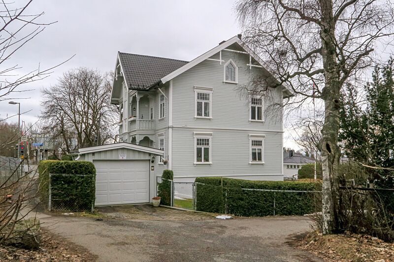
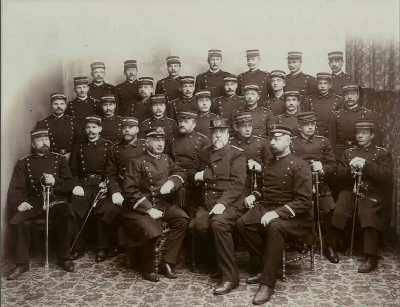

Huset med tog, venterom og politistasjon
Будинок із потягами, залом очікування та поліційною дільницею
The house with trains, a waiting room and a police station
Like ved Steinerud stasjon ligger et hus med mer liv i veggene enn mange aner. Slemdalsveien 54 A har vært både bolig, venterom for reisende og politistasjon med celler i sokkelen.

Slemdalsveien 54 A ble tegnet i 1901 av arkitekten Gustav Lorentz Guldbrandsen. Huset ble reist i en tid da området rundt Vinderen og Frøen var i stor forandring. Gårder og jordbruksområder forsvant gradvis, og nye villatomter kom til. En viktig grunn var Holmenkollbanen, som gjorde det lettere å reise mellom byen og området her oppe.
Huset lå ved det som den gang het Diakonhjemmets stasjon. Stasjonen åpnet i 1900, to år etter flere av de andre stasjonene på banen. Den skulle særlig betjene pasienter, besøkende og ansatte ved Diakonhjemmet. Derfor fikk Slemdalsveien 54 A også et eget venterom for stasjonen.
Da huset ble planlagt, skulle det ha fire leiligheter og et venterom på rundt 20 kvadratmeter. I kjelleren var det boder, rom for klesvask og praktiske fellesrom. Leilighetene hadde entré, kjøkken og to stuer som også kunne brukes som soverom. På fasaden mot Holmenkollbanen ble det tegnet inn fire verandaer, som fortsatt finnes.
Men huset fikk snart enda en rolle. I 1903 ble sokkelen gjort om til Frøen politistasjon. Kjøkkenet ble kontor, og stuene ble bygget om til tre celler med gitter i vinduene. Dermed rommet huset både familier, reisende som ventet på toget, politifolk og arrestanter.

Det må ha vært et travelt sted. Her kom folk til og fra banen, pasienter og besøkende skulle til Diakonhjemmet, og politistasjonen hadde sitt å gjøre. Det fortelles at det kunne være mye bråk på løkkene i området, men sjelden med de fastboende. I starten var det en stasjonær og to ridende betjenter knyttet til Frøen politistasjon. Senere var det to fotbetjenter.
Politistasjonen holdt til i huset i over 30 år. I 1934 flyttet den ut, og navnet ble endret fra Frøen politistasjon til Vinderen politistasjon. Etter hvert forsvant også venterommet. Fra 1936 var Slemdalsveien 54 A et rent bolighus med fem leiligheter.
Huset er ikke fredet, men fasaden er i store trekk bevart. Holmenkollbanen går fortsatt utenfor, slik den gjorde da huset var nytt. Ser du godt etter, står du ved et lite stykke lokalhistorie: et hus som har fulgt området fra landlig Aker til bydel i Oslo.
Поруч зі станцією Steinerud стоїть будинок, у стінах якого набагато більше життя, ніж видається на перший погляд. Slemdalsveien 54 A був і житлом, і залом очікування для пасажирів, і поліційною дільницею з камерами в цокольному поверсі.
Slemdalsveien 54 A спроєктував у 1901 році архітектор Густав Лоренц Гульбрандсен. Будинок звели в той час, коли район навколо Vinderen і Frøen стрімко змінювався. Хутори та сільськогосподарські угіддя поступово зникали, а на їхньому місці з’являлися нові віллові ділянки. Однією з головних причин стала залізниця Holmenkollbanen, яка спростила переїзди між містом і цим районом.
Будинок стояв біля станції, яка тоді мала назву Diakonhjemmets stasjon. Станцію відкрили у 1900 році, на два роки пізніше за більшість інших станцій лінії. Вона обслуговувала насамперед пацієнтів, відвідувачів і працівників лікарні Diakonhjemmet. Тому Slemdalsveien 54 A отримав і власний зал очікування для станції.
За планом у будинку мало бути чотири квартири та зал очікування площею близько 20 квадратних метрів. У підвалі були комори, пральня та практичні спільні приміщення. Кожна квартира мала передпокій, кухню та дві кімнати, що могли слугувати й спальнями. На фасаді з боку Holmenkollbanen було передбачено чотири веранди, які збереглися дотепер.
Однак будинок невдовзі отримав ще одну роль. У 1903 році цокольний поверх переобладнали на поліційну дільницю Frøen. Кухня стала кабінетом, а кімнати перетворили на три камери з ґратами на вікнах. Тож під одним дахом жили родини, чекали потяга пасажири, працювали поліцейські й сиділи затримані.
Тут, мабуть, кипіло життя. Люди приїздили та від’їжджали залізницею, пацієнти й відвідувачі прямували до Diakonhjemmet, а в дільниці завжди було чим зайнятись. Розповідають, що на околичних луках бувало доволі гамірно, але рідко через місцевих мешканців. Спочатку до дільниці Frøen були прикомандировані один пеший і двоє кінних поліцейських. Згодом — двоє пеших.
Поліційна дільниця залишалася в цьому будинку понад 30 років. У 1934 році вона переїхала, а її назву змінили з Frøen politistasjon на Vinderen politistasjon. Поступово зник і зал очікування. З 1936 року Slemdalsveien 54 A став суто житловим будинком на п’ять квартир.
Будинок не охороняється як пам’ятка, але фасад загалом збережений. Holmenkollbanen і досі проходить за вікном, як і тоді, коли будинок був новим. Якщо придивитися, ви стоїте біля маленького шматочка місцевої історії: будинку, який пройшов разом із районом шлях від сільського Акера до міського району Осло.
Right by Steinerud station stands a house with more life in its walls than many realise. Slemdalsveien 54 A has been both a home, a waiting room for travellers and a police station with cells in the basement.
Slemdalsveien 54 A was designed in 1901 by the architect Gustav Lorentz Guldbrandsen. The house was raised at a time when the area around Vinderen and Frøen was undergoing great change. Farms and agricultural land gradually disappeared, and new villa plots came into being. One important reason was the Holmenkoll line, which made it easier to travel between the city and the area up here.
The house lay by what was then called Diakonhjemmet station. The station opened in 1900, two years after several of the other stations on the line. It was meant especially to serve patients, visitors and staff at Diakonhjemmet (the Deaconry Home). That is why Slemdalsveien 54 A also got its own waiting room for the station.
When the house was planned, it was to have four apartments and a waiting room of around 20 square metres. In the cellar there were storage rooms, a laundry room and practical communal rooms. The apartments had a hallway, kitchen and two living rooms that could also be used as bedrooms. On the façade facing the Holmenkoll line, four verandas were drawn in, which still exist.
But the house soon took on yet another role. In 1903 the basement was converted into Frøen police station. The kitchen became an office, and the living rooms were rebuilt into three cells with bars in the windows. Thus the house held families, travellers waiting for the train, police officers and detainees alike.
It must have been a busy place. People came to and from the railway, patients and visitors were heading to Diakonhjemmet, and the police station had its hands full. It is said that there could be a lot of trouble in the meadows in the area, but rarely with the residents. In the beginning there was one stationary and two mounted officers attached to Frøen police station. Later there were two foot officers.
The police station was based in the house for over 30 years. In 1934 it moved out, and the name was changed from Frøen police station to Vinderen police station. In time the waiting room also disappeared. From 1936, Slemdalsveien 54 A was a purely residential house with five apartments.
The house is not protected, but the façade is largely preserved. The Holmenkoll line still runs outside, as it did when the house was new. If you look closely, you stand by a little piece of local history: a house that has followed the area from rural Aker to a district of Oslo.
Kilder
Her er du
Slik blir du med på jakten
Finn stolpene rundt om i Vestre Aker, skann QR-koden og les historien om hvert sted. Velg et kallenavn – så samler du poeng for hvert nye sted du besøker. Ingen innlogging, ingen app.
Se kart og kom i gang